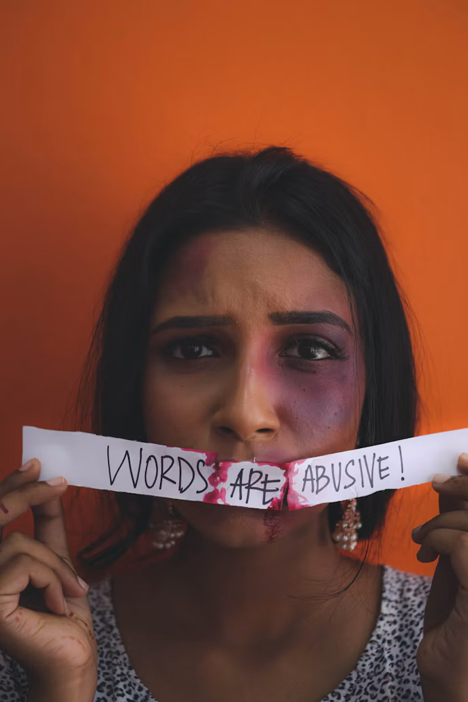

English · Editorial
Not All Bruises Bloom on Skin

A woman should not have to rehearse every sentence before speaking to her partner. She should not fear humiliation over a small mistake or be accused of disloyalty for visiting her family. Yet abuse does not always arrive as a physical blow. It can appear through repeated insults, threats, surveillance, and restrictions that make everyday life a matter of avoiding someone else’s anger. In their August 2026 review, Clifton and Losman explain that psychological abuse includes nonphysical behavior that belittles a person or allows an abuser to control them.
The difficulty is that these behaviors can be mistaken for concern or dismissed as ordinary relationship problems. A partner’s constant monitoring may be defended as protectiveness, while a woman’s distress may be blamed on oversensitivity. However, the issue is not whether a relationship occasionally becomes difficult. It is whether one person repeatedly uses fear and humiliation to restrict the other’s freedom.
We believe that emotional abuse against women must be recognized and addressed as a serious form of domestic violence. A woman should not have to suffer physical injuries before her experience deserves attention. Nor should she be expected to accept degradation simply because the person responsible claims to love her.
Keeping a relationship intact is not enough if one person must surrender her dignity to remain in it. Commitment should involve mutual respect and responsibility, not obedience secured through intimidation. Our response must therefore focus on accountability for abusive behavior and practical protection for those experiencing it.
Research published in 2026 provides a closer look at how emotional abuse affects women’s lives. Hamamra and Shehab interviewed 30 Palestinian women, aged 24–48, who had sought legal consultation at An-Najah National University’s legal clinic. The participants described public humiliation, coercive control, threats, and emotional neglect. Their accounts also revealed anxiety, depression, social withdrawal, and a growing tendency to blame themselves for their mistreatment.
The women’s experiences show how control can gradually narrow a person’s world. Participants described partners checking their phones, restricting visits to relatives, and making them afraid to leave home without permission. Others explained that repeated criticism eventually made them question their own worth. These accounts illustrate why emotional abuse cannot be reduced to hurt feelings after an argument: it can undermine both independence and the confidence needed to seek help.
Although the study concerns Palestinian women, the experiences it documents strengthen the argument for taking nonphysical abuse seriously. Its findings are consistent with Clifton and Losman’s clinical review, which identifies isolation, monitoring, and financial control among abusive behaviors. The review also associates intimate partner violence with depression, anxiety, and post-traumatic stress disorder. The consequences may differ among survivors, but the absence of physical injury does not make the harm insignificant.
Hamamra and Shehab’s study also shows why silence should not be interpreted as acceptance. Participants described how expectations surrounding family honor and shame discouraged disclosure and normalized mistreatment. When women expect judgment rather than assistance, speaking up can become another source of fear. A community that demands silence to protect a family’s reputation may end up protecting the abuse instead.
Some may argue that all relationships have problems and that patience is necessary to keep a family together. Disagreement is indeed unavoidable, and one careless remark does not automatically establish a pattern of abuse. However, there is a clear difference between disagreeing with a partner and making her afraid to disagree. Patience cannot resolve a situation in which only one person is expected to change while the other continues to threaten or degrade her.
Others may ask why a woman does not simply leave. Clifton and Losman identify financial dependence, isolation, fear of retaliation, and hope that the partner will change as reasons survivors remain. They also warn that danger can increase when an abuser discovers a victim’s intention to leave. These circumstances call for informed support and safety planning, not accusations that a woman is responsible for the abuse because she has not yet escaped it.
Emotional abuse can damage mental health, weaken self-worth, and separate women from people who might help them. The accounts documented by Hamamra and Shehab, together with Clifton and Losman’s clinical review, show why threats, humiliation, and control deserve serious attention. Treating these behaviors as private disagreements overlooks their consequences and places an unfair burden on survivors to endure them.
Schools should teach students to distinguish affection from control. Families should listen without immediately asking what a woman did to provoke her partner. Local authorities and support organizations should provide confidential assistance, accessible counseling, and guidance that respects each survivor’s circumstances. Help should give women real options rather than another instruction to be patient.
We must stop measuring abuse only by what can be photographed. Take repeated threats seriously. Challenge the belief that jealousy excuses control, and refuse to make a woman’s endurance the measure of her loyalty. A relationship should allow her to live freely, not teach her to become smaller, quieter, and more afraid. Love should never require captivity.
References
- Clifton, E. G., & Losman, E. D. (2026, August 4). Intimate partner violence. Merck Manual Consumer Version. Read source
- Hamamra, B., & Shehab, E. (2026). Emotional abuse, cultural norms, and psychological consequences for Palestinian women in marital and intimate relationships. Discover Public Health, 23(1). Read source